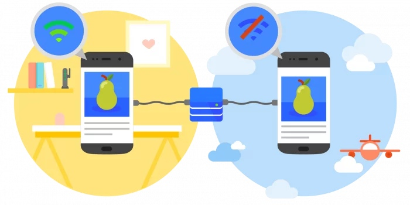

【PWA学习与实践】(3) 让你的WebApp离线可用
本文是《PWA学习与实践》系列的第三篇文章。

PWA作为今年最火热的技术概念之一，对提升Web应用的安全、性能和体验有着很大的意义，非常值得我们去了解与学习。
本系列文章《PWA学习与实践》会逐步拆解PWA背后的各项技术，通过实例代码来讲解这些技术的应用方式。也正是因为PWA中技术点众多、知识细碎，因此我在学习过程中，进行了整理，并产出了《PWA学习与实践》系列文章，希望能带大家全面了解PWA中的各项技术。对PWA感兴趣的朋友欢迎关注。
本文中的代码都可以在learning-pwa的sw-cache分支上找到（
git clone后注意切换到sw-cache分支）。
1. 引言
PWA其中一个令人着迷的能力就是离线（offline）可用。
离线只是它的一种功能表现而已，具体说来，它可以：
- 让我们的Web App在无网（offline）情况下可以访问，甚至使用部分功能，而不是展示“无网络连接”的错误页；
- 让我们在弱网的情况下，能使用缓存快速访问我们的应用，提升体验；
- 在正常的网络情况下，也可以通过各种自发控制的缓存方式来节省部分请求带宽；
- ……
而这一切，其实都要归功于PWA背后的英雄 —— Service Worker。
那么，Service Worker是什么呢？你可以把Service Worker简单理解为一个独立于前端页面，在后台运行的进程。因此，它不会阻塞浏览器脚本的运行，同时也无法直接访问浏览器相关的API（例如：DOM、localStorage等）。此外，即使在离开你的Web App，甚至是关闭浏览器后，它仍然可以运行。它就像是一个在Web应用背后默默工作的勤劳小蜜蜂，处理着缓存、推送、通知与同步等工作。所以，要学习PWA，绕不开的就是Service Worker。
在接下来的几篇文章里，我会从如何使用Service Worker来实现资源的缓存、消息的推送、消息的通知以及后台同步这几个角度，来介绍相关原理与技术实现。这些部分会是PWA技术的重点。需要特别注意的是，由于Service Worker所具有的强大能力，因此规范规定，Service Worker只能运行在HTTPS域下。然而我们开发时候没有HTTPS怎么办？别着急，还有一个贴心的地方——为方便本地开发，Service Worker也可以运行在localhost（127.0.0.1）域下。
好了，简单了解了Service Worker与它能实现的功能后，我们还是要回到这一篇的主题，也就是Service Worker的第一部分——如何利用Service Worker来实现前端资源的缓存，从而提升产品的访问速度，做到离线可用。
2. Service Worker是如何实现离线可用的？
这一小节会告诉大家，Service Worker是如何让我们在离线的情况下也能访问Web App的。当然，离线访问只是其中一种表现。
首先，我们想一下，当访问一个web网站时，我们实际上做了什么呢？总体上来说，我们通过与与服务器建立连接，获取资源，然后获取到的部分资源还会去请求新的资源（例如html中使用的css、js等）。所以，粗粒度来说，我们访问一个网站，就是在获取/访问这些资源。
可想而知，当处于离线或弱网环境时，我们无法有效访问这些资源，这就是制约我们的关键因素。因此，一个最直观的思路就是：如果我们把这些资源缓存起来，在某些情况下，将网络请求变为本地访问，这样是否能解决这一问题？是的。但这就需要我们有一个本地的cache，可以灵活地将各类资源进行本地存取。
有了本地的cache还不够，我们还需要能够有效地使用缓存、更新缓存与清除缓存，进一步应用各种个性化的缓存策略。而这就需要我们有个能够控制缓存的“worker”——这也就是Service Worker的部分工作之一。顺便多说一句，可能有人还记得 ApplicationCache 这个API。当初它的设计同样也是为了实现Web资源的缓存，然而就是因为不够灵活等各种缺陷，如今已被Service Worker与cache API所取代了。
Service Worker有一个非常重要的特性：你可以在Service Worker中监听所有客户端（Web）发出的请求，然后通过Service Worker来代理，向后端服务发起请求。通过监听用户请求信息，Service Worker可以决定是否使用缓存来作为Web请求的返回。
下图展示普通Web App与添加了Service Worker的Web App在网络请求上的差异：
这里需要强调一下，虽然图中好像将浏览器、SW(Service Worker)与后端服务三者并列放置了，但实际上浏览器（你的Web应用）和SW都是运行在你的本机上的，所以这个场景下的SW类似一个“客户端代理”。
了解了基本概念之后，就可以具体来看下，我们如何应用这个技术来实现一个离线可用的Web应用。
3. 如何使用Service Worker实现离线可用的“秒开”应用
还记得我们之前的那个图书搜索的demo Web App么？不了解的朋友可以看下本系列的第一篇文章，当然你可以忽略细节，继续往下了解技术原理。
没错，这次我仍然会基于它进行改造。在上一篇添加了manifest后，它已经拥有了自己的桌面图标，并有一个很像Native App的外壳；而今天，我会让它变得更酷。
如果想要跟着文章内容一起实践，可以在这里下载到所需的全部代码。
记得切换到manifest分支，因为本篇内容，是基于上一篇的最终代码进行相应的开发与升级。毕竟我们的最终目标是将这个普通的“图书搜索”demo升级为PWA。
3.1. 注册Service Worker
注意，我们的应用始终应该是渐进可用的，在不支持Service Worker的环境下，也需要保证其可用性。要实现这点，可以通过特性检测，在index.js中来注册我们的Service Worker（sw.js）：
// index.js
// 注册service worker，service worker脚本文件为sw.js
if ('serviceWorker' in navigator) {
navigator.serviceWorker.register('./sw.js').then(function () {
console.log('Service Worker 注册成功');
});
}
这里我们将sw.js文件注册为一个Service Worker，注意文件的路径不要写错了。
值得一提的是，Service Worker的各类操作都被设计为异步，用以避免一些长时间的阻塞操作。这些API都是以Promise的形式来调用的。所以你会在接下来的各段代码中不断看到Promise的使用。如果你完全不了解Promise，可以先在这里了解基本的Promise概念：Promise（MDN）和JavaScript Promise：简介。
3.2. Service Worker的生命周期
当我们注册了Service Worker后，它会经历生命周期的各个阶段，同时会触发相应的事件。整个生命周期包括了：installing --> installed --> activating --> activated --> redundant。当Service Worker安装（installed）完毕后，会触发install事件；而激活（activated）后，则会触发activate事件。
下面的例子监听了install事件：
// 监听install事件
self.addEventListener('install', function (e) {
console.log('Service Worker 状态： install');
});
self是Service Worker中一个特殊的全局变量，类似于我们最常见的window对象。self引用了当前这个Service Worker。
3.3. 缓存静态资源
通过上一节，我们已经学会了如何添加事件监听，来在合适的时机触发Service Worker的相应操作。现在，要使我们的Web App离线可用，就需要将所需资源缓存下来。我们需要一个资源列表，当Service Worker被激活时，会将该列表内的资源缓存进cache。
// sw.js
var cacheName = 'bs-0-2-0';
var cacheFiles = [
'/',
'./index.html',
'./index.js',
'./style.css',
'./img/book.png',
'./img/loading.svg'
];
// 监听install事件，安装完成后，进行文件缓存
self.addEventListener('install', function (e) {
console.log('Service Worker 状态： install');
var cacheOpenPromise = caches.open(cacheName).then(function (cache) {
return cache.addAll(cacheFiles);
});
e.waitUntil(cacheOpenPromise);
});
可以看到，首先在cacheFiles中我们列出了所有的静态资源依赖。注意其中的'/'，由于根路径也可以访问我们的应用，因此不要忘了将其也缓存下来。当Service Worker install时，我们就会通过caches.open()与cache.addAll()方法将资源缓存起来。这里我们给缓存起了一个cacheName，这个值会成为这些缓存的key。
上面这段代码中，caches是一个全局变量，通过它我们可以操作Cache相关接口。
Cache 接口提供缓存的 Request / Response 对象对的存储机制。Cache 接口像 workers 一样, 是暴露在 window 作用域下的。尽管它被定义在 service worker 的标准中, 但是它不必一定要配合 service worker 使用。——MDN
3.4 使用缓存的静态资源
到目前为止，我们仅仅是注册了一个Service Worker，并在其install时缓存了一些静态资源。然而，如果这时运行这个demo你会发现——“图书搜索”这个Web App依然无法离线使用。
为什么呢？因为我们仅仅缓存了这些资源，然而浏览器并不知道需要如何使用它们；换言之，浏览器仍然会通过向服务器发送请求来等待并使用这些资源。那怎么办？
聪明的你应该想起来了，我们在文章前半部分介绍Service Worker时提到了“客户端代理”——用Service Worker来帮我们决定如何使用缓存。
下图是一个简单的策略：
- 浏览器发起请求，请求各类静态资源（html/js/css/img）；
- Service Worker拦截浏览器请求，并查询当前cache；
- 若存在cache则直接返回，结束；
- 若不存在cache，则通过
fetch方法向服务端发起请求，并返回请求结果给浏览器
// sw.js
self.addEventListener('fetch', function (e) {
// 如果有cache则直接返回，否则通过fetch请求
e.respondWith(
caches.match(e.request).then(function (cache) {
return cache || fetch(e.request);
}).catch(function (err) {
console.log(err);
return fetch(e.request);
})
);
});
fetch事件会监听所有浏览器的请求。e.respondWith()方法接受Promise作为参数，通过它让Service Worker向浏览器返回数据。caches.match(e.request)则可以查看当前的请求是否有一份本地缓存：如果有缓存，则直接向浏览器返回cache；否则Service Worker会向后端服务发起一个fetch(e.request)的请求，并将请求结果返回给浏览器。
到目前为止，运行我们的demo：当第一联网打开“图书搜索”Web App后，所依赖的静态资源就会被缓存在本地；以后再访问时，就会使用这些缓存而不发起网络请求。因此，即使在无网情况下，我们似乎依旧能“访问”该应用。
3.5. 更新静态缓存资源
然而，如果你细心的话，会发现一个小问题：当我们将资源缓存后，除非注销（unregister）sw.js、手动清除缓存，否则新的静态资源将无法缓存。
解决这个问题的一个简单方法就是修改cacheName。由于浏览器判断sw.js是否更新是通过字节方式，因此修改cacheName会重新触发install并缓存资源。此外，在activate事件中，我们需要检查cacheName是否变化，如果变化则表示有了新的缓存资源，原有缓存需要删除。
// sw.js
// 监听activate事件，激活后通过cache的key来判断是否更新cache中的静态资源
self.addEventListener('activate', function (e) {
console.log('Service Worker 状态： activate');
var cachePromise = caches.keys().then(function (keys) {
return Promise.all(keys.map(function (key) {
if (key !== cacheName) {
return caches.delete(key);
}
}));
})
e.waitUntil(cachePromise);
return self.clients.claim();
});
3.6. 缓存API数据的“离线搜索”
到这里，我们的应用基本已经完成了离线访问的改造。但是，如果你注意到文章开头的图片就会发现，离线时我们不仅可以访问，还可以使用搜索功能。
这是怎么回事呢？其实这背后的秘密就在于，这个Web App也会把XHR请求的数据缓存一份。而再次请求时，我们会优先使用本地缓存（如果有缓存的话）；然后向服务端请求数据，服务端返回数据后，基于该数据替换展示。大致过程如下：
首先我们改造一下前一节的代码在sw.js的fetch事件里进行API数据的缓存
// sw.js
var apiCacheName = 'api-0-1-1';
self.addEventListener('fetch', function (e) {
// 需要缓存的xhr请求
var cacheRequestUrls = [
'/book?'
];
console.log('现在正在请求：' + e.request.url);
// 判断当前请求是否需要缓存
var needCache = cacheRequestUrls.some(function (url) {
return e.request.url.indexOf(url) > -1;
});
/**** 这里是对XHR数据缓存的相关操作 ****/
if (needCache) {
// 需要缓存
// 使用fetch请求数据，并将请求结果clone一份缓存到cache
// 此部分缓存后在browser中使用全局变量caches获取
caches.open(apiCacheName).then(function (cache) {
return fetch(e.request).then(function (response) {
cache.put(e.request.url, response.clone());
return response;
});
});
}
/* ******************************* */
else {
// 非api请求，直接查询cache
// 如果有cache则直接返回，否则通过fetch请求
e.respondWith(
caches.match(e.request).then(function (cache) {
return cache || fetch(e.request);
}).catch(function (err) {
console.log(err);
return fetch(e.request);
})
);
}
});
这里，我们也为API缓存的数据创建一个专门的缓存位置，key值为变量apiCacheName。在fetch事件中，我们首先通过对比当前请求与cacheRequestUrls来判断是否是需要缓存的XHR请求数据，如果是的话，就会使用fetch方法向后端发起请求。
在fetch.then中我们以请求的URL为key，向cache中更新了一份当前请求所返回数据的缓存：cache.put(e.request.url, response.clone())。这里使用.clone()方法拷贝一份响应数据，这样我们就可以对响应缓存进行各类操作而不用担心原响应信息被修改了。
3.7. 应用离线XHR数据，完成“离线搜索”，提升响应速度
如果你跟着做到了这一步，那么恭喜你，距离我们酷酷的离线应用还差最后一步了！
目前为止，我们对Service Worker（sw.js）的改造已经完毕了。最后只剩下如何在XHR请求时有策略的使用缓存了，这一部分的改造全部集中于index.js，也就是我们的前端脚本。
还是回到上一节的这张图：
和普通情况不同，这里我们的前端浏览器会首先去尝试获取缓存数据并使用其来渲染界面；同时，浏览器也会发起一个XHR请求，Service Worker通过将请求返回的数据更新到存储中的同时向前端Web应用返回数据（这一步分就是上一节提到的缓存策略）；最终，如果判断返回的数据与最开始取到的cache不一致，则重新渲染界面，否则忽略。
为了是代码更清晰，我们将原本的XHR请求部分单独剥离出来，作为一个方法getApiDataRemote()以供调用，同时将其改造为了Promise。为了节省篇幅，我部分的代码比较简单，就不单独贴出了。
这一节最重要的部分其实是读取缓存。我们知道，在Service Worker中是可以通过caches变量来访问到缓存对象的。令人高兴的是，在我们的前端应用中，也仍然可以通过caches来访问缓存。当然，为了保证渐进可用，我们需要先进行判断'caches' in window。为了代码的统一，我将获取该请求的缓存数据也封装成了一个Promise方法：
function getApiDataFromCache(url) {
if ('caches' in window) {
return caches.match(url).then(function (cache) {
if (!cache) {
return;
}
return cache.json();
});
}
else {
return Promise.resolve();
}
}
而原本我们在queryBook()方法中，我们会请求后端数据，然后渲染页面；而现在，我们加上基于缓存的渲染：
function queryBook() {
// ……
// 远程请求
var remotePromise = getApiDataRemote(url);
var cacheData;
// 首先使用缓存数据渲染
getApiDataFromCache(url).then(function (data) {
if (data) {
loading(false);
input.blur();
fillList(data.books);
document.querySelector('#js-thanks').style = 'display: block';
}
cacheData = data || {};
return remotePromise;
}).then(function (data) {
if (JSON.stringify(data) !== JSON.stringify(cacheData)) {
loading(false);
input.blur();
fillList(data.books);
document.querySelector('#js-thanks').style = 'display: block';
}
});
// ……
}
如果getApiDataFromCache(url).then返回缓存数据，则使用它先进行渲染。而当remotePromise的数据返回时，与cacheData进行比对，只有在数据不一致时需要重新渲染页面（注意这里为了简便，粗略地使用了JSON.stringify()方法进行对象间的比较）。这么做有两个优势：
- 离线可用。如果我们之前访问过某些URL，那么即使在离线的情况下，重复相应的操作依然可以正常展示页面；
- 优化体验，提高访问速度。读取本地cache耗时相比于网络请求是非常低的，因此就会给我们的用户一种“秒开”、“秒响应”的感觉。
4. 使用Lighthouse测试我们的应用
至此，我们完成了PWA的两大基本功能：Web App Manifest和Service Worker的离线缓存。这两大功能可以很好地提升用户体验与应用性能。我们用Chrome中的Lighthouse来检测一下目前的应用：
可以看到，在PWA评分上，我们的这个Web App已经非常不错了。其中唯一个扣分项是在HTTPS协议上：由于是本地调试，所以使用了 http://127.0.0.1:8085 ，在生产肯定会替换为HTTPS。
5. 这太酷了，但是兼容性呢？
随着今年（2018年）年初，Apple在iOS 11.3中开始支持Service Worker，加上Apple一直以来较为良好的系统升级率，整个PWA在兼容性问题上有了重大的突破。
虽然Service Worker中的一些其他功能（例如推送、后台同步）Apple并未表态，但是Web App Manifest和Service Worker的离线缓存是iOS 11.3所支持的。这两大核心功能不仅效果拔群，而且目前看来具有还不错的兼容性，非常适合投入生产。
更何况，作为渐进式网页应用，其最重要的一个特点就是在兼容性支持时自动升级功能与体验；而在不支持时，会静默回退部分新功能。在保证我们的正常服务情况下，尽可能利用浏览器特性，提供更优质的服务。
6. 写在最后
本文中所有的代码示例均可以在learn-pwa/sw-cache上找到。注意在git clone之后，切换到sw-cache分支，本文所有的代码均存在于该分支上。切换其他分值可以看到不同的版本：
- basic分支：基础项目demo，一个普通的图书搜索应用（网站）；
- manifest分支：基于basic分支，添加manifest等功能，具体可以看上一篇文章了解；
- sw-cache分支：基于manifest分支，添加缓存与离线功能；
- master分支：应用的最新代码。
如果你喜欢或想要了解更多的PWA相关知识，欢迎关注我，关注《PWA学习与实践》系列文章。我会总结整理自己学习PWA过程的遇到的疑问与技术点，并通过实际代码和大家一起实践。
最后声明一下，文中的代码作为demo，主要是用于了解与学习PWA技术原理，可能会存在一些不完善的地方，因此，不建议直接使用到生产环境。